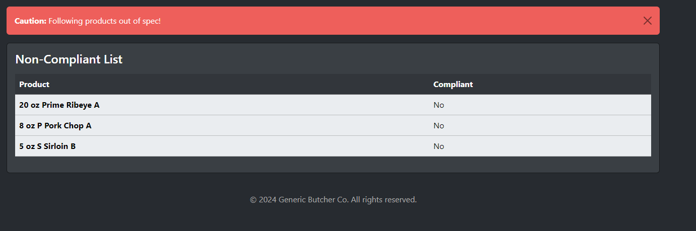
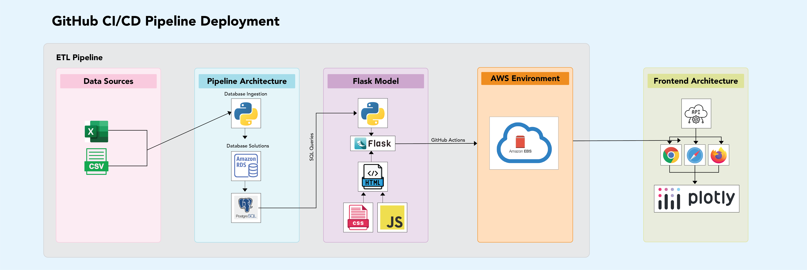
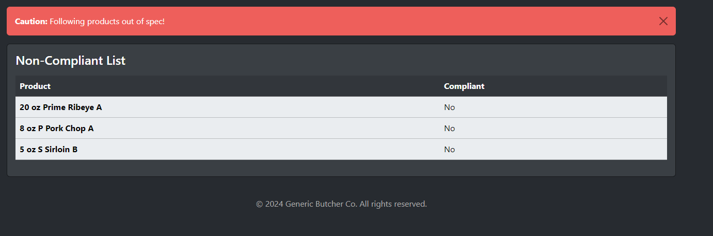
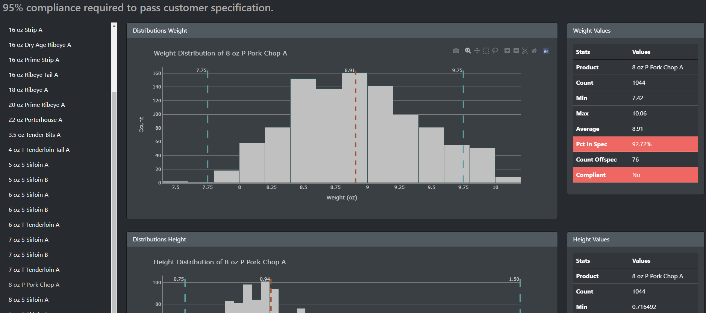
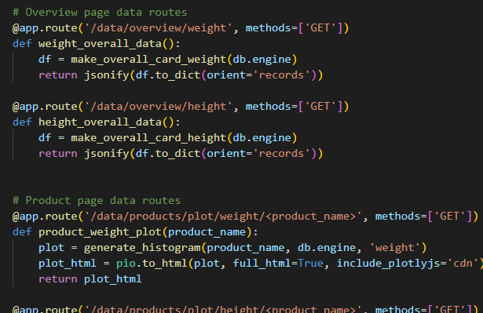

Main Application
Python is used for transformations and visualizations, Flask for the backend, and AWS EBS for hosting.
Figure 2: Main dashboard action page showing key metrics for quick insights.
This project showcases skills in data engineering, problem-solving, and AWS integration. For additional details, please check out the demo video below or the README directly on GitHub.
View on GitHubThis project addresses an issue where data from an industrial butcher's camera is stored in CSV files, cleaned manually, exported to Excel, and used to visualize non-compliant products. The solution automates this process, ensuring data integrity and saving valuable time.
The process grabs data from CSV via Python, cleans it, creates ID columns, and stores it in an AWS RDS Postgres instance. This automation can be extended to use S3 buckets for triggering scripts.
Figure 1: Pipeline architecture from data collection to storage.
Python is used for transformations and visualizations, Flask for the backend, and AWS EBS for hosting.
Figure 2: Main dashboard action page showing key metrics for quick insights.
Interactive charts and graphs allow users to visualize product compliance and other key metrics easily.
Figure 5: Data visualization showing product compliance.
The deployment process is automated using GitHub Actions, ensuring the application is deployed on every push to the repository.
This project demonstrates leadership, technical skills, and AWS integration. Future improvements are based on client requests. For more details, please check out the GitHub repository or contact me at saad.nasir@utexas.edu.
Figure 6: Sample code from workflow yml file.
Figure 7: Sample routes for different pages.